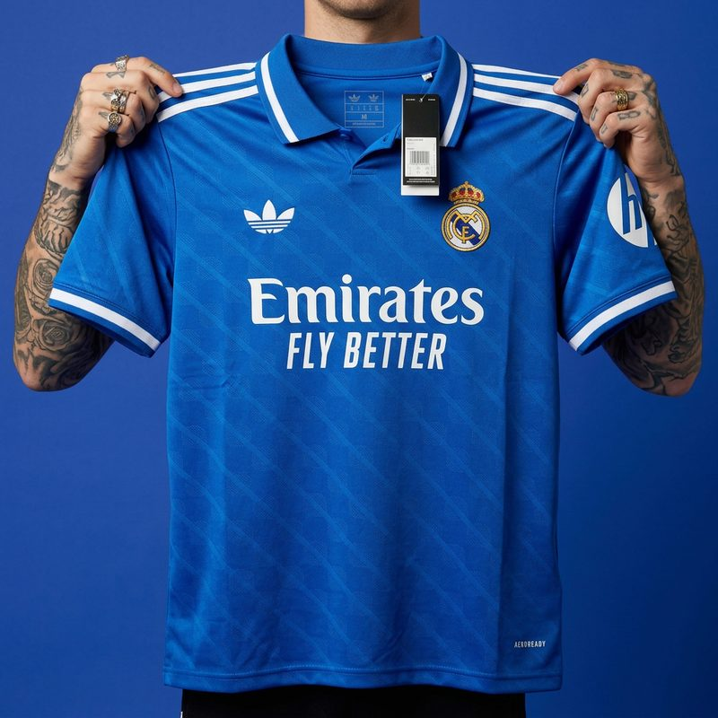
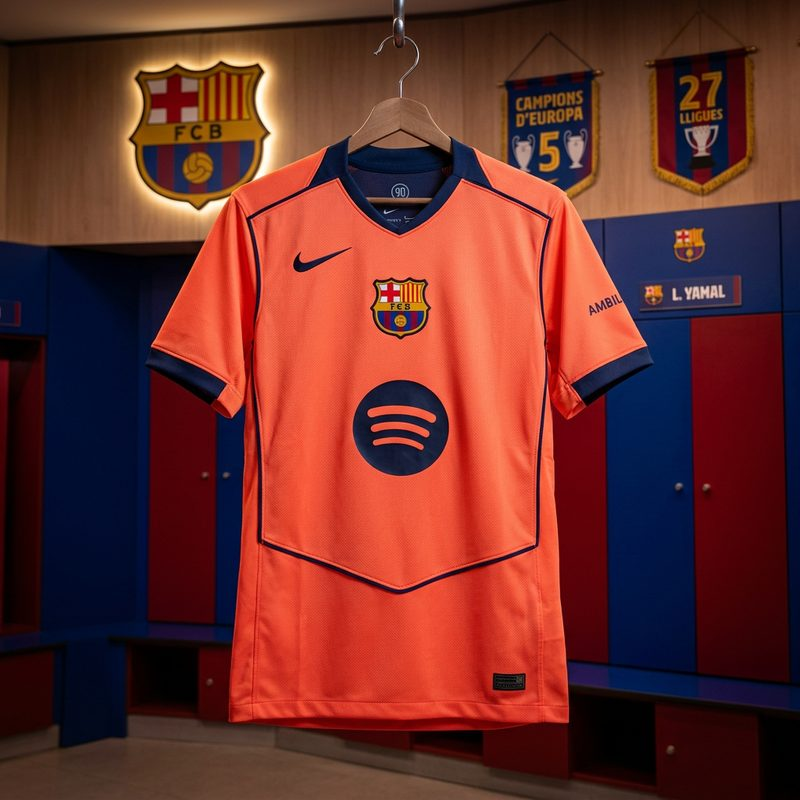
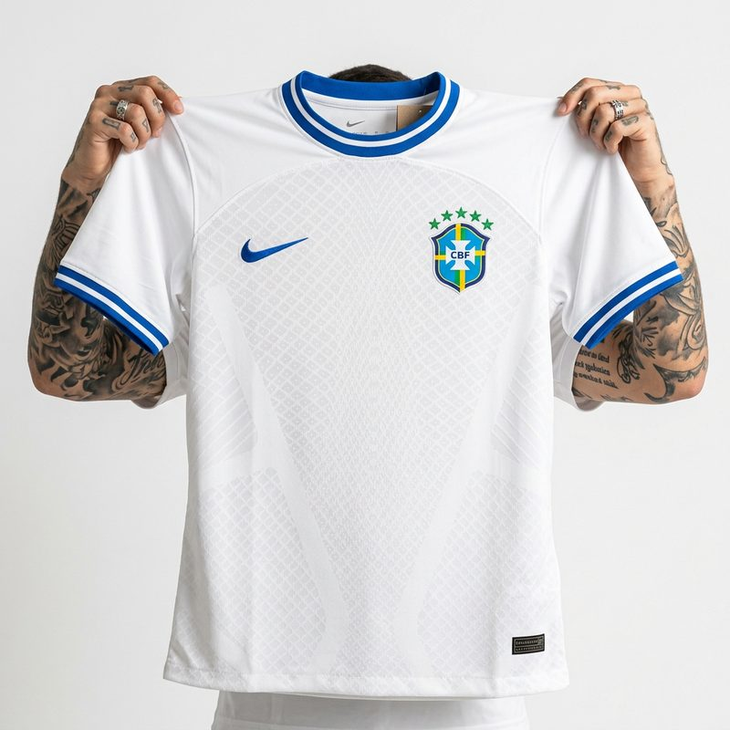
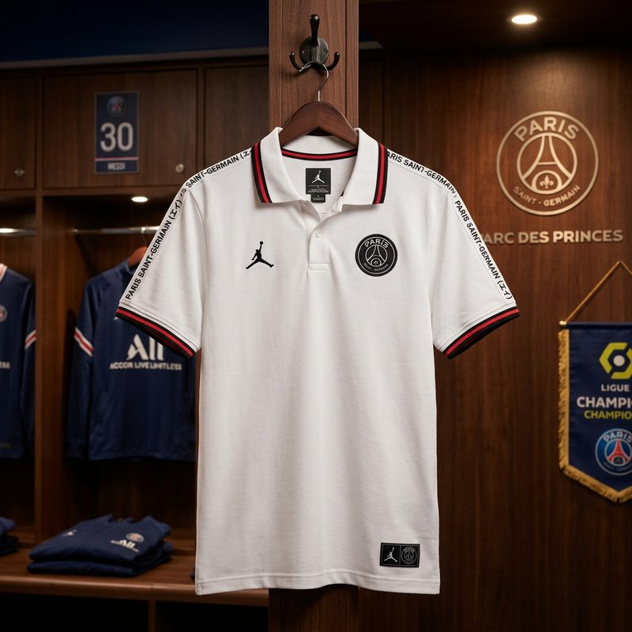

CAMISA 12 FC
CAMISA 12 FCSe você já pesquisou camisa de time pela internet, com certeza esbarrou nos termos original, réplica e tailandesa — e talvez tenha ficado na dúvida sobre o que muda de uma para outra. A diferença existe, é real e mexe direto no preço. Mas quase ninguém explica isso de forma clara e honesta.
Aqui na Camisa 12 FC a gente prefere jogar limpo: você merece entender o que está comprando antes de gastar o seu dinheiro. Então bora descomplicar cada categoria, sem marketing enganoso e sem desmerecer nenhuma delas.
Camisa original: a versão oficial da marca
A camisa original é aquela produzida ou licenciada pela marca esportiva que tem contrato com o clube ou a seleção — Nike, Adidas, Puma e por aí vai. É a peça que você encontra na loja oficial do time, com etiqueta, tags de autenticidade e, normalmente, preço bem salgado (é comum passar dos R$ 350, R$ 500 e às vezes muito mais, dependendo do modelo e da versão jogador).
O que você paga ali não é só o tecido: é a marca, o licenciamento oficial, o escudo autorizado e toda a estrutura por trás. Para colecionadores e para quem faz questão do selo oficial, faz todo o sentido. É a referência máxima de autenticidade.
Réplica: o termo mais confuso do mercado
A palavra réplica gera muita confusão porque é usada de dois jeitos diferentes. Às vezes, "réplica" é o nome que a própria marca dá para a versão torcedor da camisa oficial (mais simples que a versão jogador, mas ainda original). Outras vezes, "réplica" é usada no dia a dia para qualquer camisa que reproduz o modelo de um time sem ser a peça oficial licenciada.
Por isso, quando alguém fala "réplica", vale sempre perguntar: réplica no sentido de versão torcedor oficial, ou no sentido de reprodução não oficial? São coisas bem diferentes, e é bom não confundir na hora de comparar preços.
Tailandesa: o custo-benefício que conquistou o Brasil
A famosa camisa tailandesa é uma reprodução de alta qualidade, geralmente fabricada na Ásia, que copia o visual da camisa oficial com muito capricho. Ela ficou conhecida justamente por entregar aparência muito parecida com a original custando uma fração do preço. Não é uma peça licenciada pela marca — e a gente não vai fingir que é.
O que faz a tailandesa ser tão procurada é o equilíbrio: tecido de qualidade, escudo e detalhes bem feitos, caimento bacana e um preço que cabe no bolso. Dentro dessa categoria ainda existem níveis de qualidade (você já deve ter visto o termo "1.1", que indica as versões mais bem acabadas). Para a imensa maioria dos torcedores que querem vestir o manto do coração sem gastar uma fortuna, é uma escolha excelente.
Afinal, qual é a melhor para você?
Não existe uma resposta única — existe a resposta certa para o seu objetivo. Vale pensar assim:
- Faz questão do selo oficial e é colecionador? A original é o caminho, mesmo custando mais.
- Quer vestir o time com ótima aparência e qualidade, pagando bem menos? A tailandesa 1.1 é imbatível em custo-benefício.
- Vai usar no dia a dia, na pelada, para torcer no bar ou no estádio? Aqui a versão de boa qualidade cumpre o papel com sobra.
As camisas que a gente vende na nossa loja são versões de excelente qualidade, com ótimo custo-benefício — não são peças oficiais licenciadas, e a gente faz questão de deixar isso claro. O que a gente garante é caprichar na qualidade, no acabamento e no atendimento, para você receber um manto bonito e bem feito.
Como comprar com tranquilidade
Independente da categoria, o mais importante é comprar de quem explica tudo com transparência e dá suporte de verdade. Na Camisa 12 FC você conta com entrega para todo o Brasil, pagamento no Pix (com desconto), cartão em até 12x ou boleto, e troca em até 7 dias se precisar. Ficou em dúvida sobre modelo ou tamanho? É só chamar no WhatsApp (48) 99828-5221 que a gente te ajuda a escolher.
No fim das contas, entender a diferença entre original, réplica e tailandesa deixa você no controle da compra. E é exatamente isso que a gente quer: um torcedor bem informado, feliz com o manto que escolheu. Quer ver mais dicas? Dá uma passada no nosso blog.
⚽ Camisas em Destaque
Escolha a sua e finalize pelo WhatsApp — entrega para todo o Brasil, no Pix, cartão ou boleto.




Ficou com alguma dúvida? Chama a gente no WhatsApp — a Camisa 12 FC é a loja do 12º jogador.